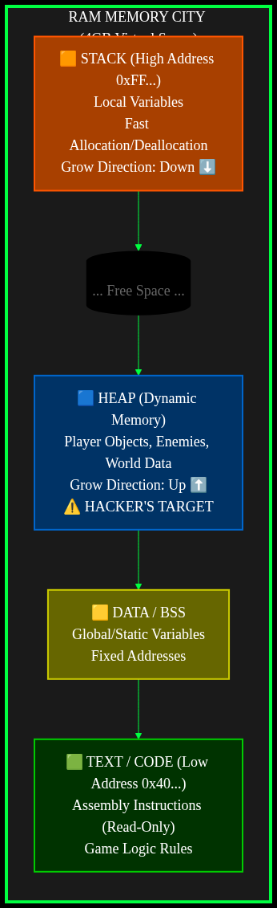
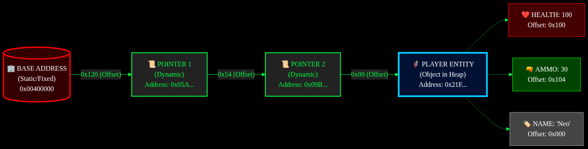

Từ Zero đến Hero: Game Hacking & Reverse Engineering
Chào mừng tân binh đến với khóa huấn luyện Game Hacking khắc nghiệt nhất. Cuốn sách này không dạy bạn cách phá hoại. Nó dạy bạn cách làm chủ công nghệ.
“Tôi không dạy bạn cách dùng tool. Tôi dạy bạn cách máy tính suy nghĩ. Khi bạn hiểu máy tính, bạn là Chúa.”
Chào mừng tân binh. Bạn đang đứng trước cánh cổng của thế giới ngầm (Underground). Nhiệm vụ của chương này không phải là hack game ngay. Nhiệm vụ của bạn là “Mở Mắt”. Bạn phải nhìn thấy ma trận số (Matrix) đằng sau những hình ảnh đồ họa lung linh.
Mục tiêu:
Đi đánh trận mà tay không thì chỉ có “Feed mạng”. Cài đặt ngay bộ 3 hủy diệt này:
Visual Studio 2022 (Community):
Cheat Engine (Bản mới nhất):
Process Hacker 2:
Khi bạn bật game (CS2, LoL…), toàn bộ Game được load từ ổ cứng lên RAM. Hacker không tấn công ổ cứng. Hacker tấn công RAM.
Hãy tưởng tượng RAM là một Thành Phố Khổng Lồ:
0x00400000.Thành phố này được quy hoạch thành 4 quận chính. Bạn bắt buộc phải nhớ:

🧠 Ghi nhớ cốt tử:
- Hack Máu/Đạn/Tiền: Chúng ta lùng sục ở Heap.
- Hack Bất tử/Nhìn xuyên tường (Logic): Chúng ta sửa đổi Code (.text).
Tại sao Hacker luôn viết 0xDEADBEEF mà không viết số thường?
Bảng Chuyển Đổi Nhanh:
| Thập phân (Dec) | Hex (0x) | Nhị phân (Bin) | Ý nghĩa |
|---|---|---|---|
| 0 | 0 | 0000 | Rỗng |
| 10 | A | 1010 | |
| 15 | F | 1111 | Full 4-bit |
| 255 | FF | 1111 1111 | Full 1 Byte (Max) |
Quy ước: Bất cứ khi nào thấy tiền tố
0x, hãy hiểu đó là số Hex. Ví dụ: Địa chỉ0x123không phải là một trăm hai mươi ba, mà là1*256 + 2*16 + 3.
Máy tính không biết “Máu” hay “Mana”. Nó chỉ biết các ô nhớ vô hồn. Để tìm được kẻ địch, bạn phải biết hắn trông như thế nào.
100.5f).Đây là “Trùm Cuối” của mớ lý thuyết. Nếu vượt qua được nó, bạn đã thắng 50% game.
Vấn đề:
Game hiện đại có cơ chế ASLR (Address Space Layout Randomization).
Mỗi lần khởi động game, Windows sẽ tráo đổi vị trí các ngôi nhà trên RAM.
Hôm nay địa chỉ Máu là 0x1000, mai nó nhảy sang 0x9999.
Giải pháp:
Game cũng sợ lạc mất Máu. Nên Game luôn giữ một tờ giấy ghi địa chỉ Máu hiện tại. Tờ giấy đó gọi là Con Trỏ (Pointer).
Con trỏ thường nằm ở một vị trí Tĩnh (Static) không bao giờ đổi (thường là trong file .exe hoặc .dll).
Mô hình truy tìm kho báu:

Hacker dùng Cheat Engine để Pointer Scan - Dò ngược từ Kho báu về Tòa thị chính để tìm ra con đường này.
Bạn không thể hack nếu không biết game được tạo ra thế nào. Hãy code một con game giả lập bằng C++ để làm “bao cát” cho chúng ta tập luyện.
DummyGame.cppCopy đoạn code này vào Visual Studio và chạy (F5).
#include <iostream>
#include <windows.h>
#include <vector>
// Cấu trúc nhân vật trong game
struct Player {
int id; // 4 bytes
char name[32]; // 32 bytes
int health; // 4 bytes (Mục tiêu của chúng ta!)
int ammo; // 4 bytes
float posX, posY; // 8 bytes
};
int main() {
SetConsoleTitleA("Dummy Game - Targeted by VTech");
std::cout << ">>> GAME INIT... <<<" << std::endl;
// Cấp phát nhân vật trên HEAP (Vùng nhớ động)
// Đây là lý do địa chỉ thay đổi mỗi lần chạy
Player* myPlayer = new Player();
// Gán chỉ số ban đầu
myPlayer->id = 777;
strcpy_s(myPlayer->name, "Neo");
myPlayer->health = 100;
myPlayer->ammo = 30;
myPlayer->posX = 150.5f;
// In địa chỉ ra để "nhá hàng" (Game thật không bao giờ có dòng này!)
std::cout << "[DEBUG] Player Struct Address: 0x" << std::hex << (uintptr_t)myPlayer << std::endl;
std::cout << "[DEBUG] Health Address: 0x" << std::hex << (uintptr_t)&myPlayer->health << std::endl;
std::cout << "------------------------------------------------" << std::endl;
while (true) {
// Game Loop
std::cout << "Player: " << myPlayer->name
<< " | HP: " << std::dec << myPlayer->health
<< " | Ammo: " << myPlayer->ammo
<< " | Pos: " << myPlayer->posX << std::endl;
// Logic game: Tự mất máu theo thời gian
if (myPlayer->health > 0) {
myPlayer->health -= 1;
} else {
std::cout << ">>> GAME OVER (YOU DIED) <<<" << std::endl;
// Hồi sinh
std::cout << "Respawning..." << std::endl;
myPlayer->health = 100;
}
Sleep(1000); // Nghỉ 1 giây
}
delete myPlayer;
return 0;
}
DummyGame.exe.DummyGame.exe.health xem nào? (Nó bắt đầu từ 100 và giảm dần).Gợi ý: Nếu bạn tìm ra, hãy thử “Freeze” (Đóng băng) nó. Nếu Console của game cứ in ra
HP: 100mãi mãi mặc dù game đang trừ máu -> BẠN ĐÃ THÀNH CÔNG! 🎉
Tiếp theo: Chương 2 - Hacker’s Swiss Knife (Cheat Engine)
“Cheat Engine không chỉ là tool hack. Nó là kính hiển vi, là dao mổ, và là khẩu súng bắn tỉa của mọi Game Hacker.”
Ở Chương 1, bạn đã biết RAM là chiến trường. Ở Chương này, bạn sẽ học cách sử dụng vũ khí tối thượng: Cheat Engine (CE).
Đừng lầm tưởng CE chỉ dùng để chỉnh tiền game offline. Các kỹ thuật Scan, Debugger, Disassembler của nó là nền tảng cho mọi tool hack cao cấp sau này (kể cả hack game online).
Mục tiêu:
Làm sao CE tìm được đúng địa chỉ máu trong đống hỗn độn hàng tỷ byte của RAM? Nó dùng phương pháp LOẠI TRỪ (Elimination).
100 (giả sử máu là 100). Có thể tìm ra 1 triệu kết quả.90 máu.Dùng khi bạn nhìn thấy số cụ thể trên màn hình (Máu, Đạn, Tiền).
Bài Tập: Hack Đạn trong DummyGame (hoặc Tutorial Step 2 của CE).
Quy Trình Tác Chiến:
Value.Scan Type = Exact Value.Value Type = 4 Bytes (Chuẩn công nghiệp).29 vào ô Value -> Bấm Next Scan.9999.Dùng khi bạn không biết số cụ thể (Thanh máu dạng thanh trượt, không hiện số).
Quy Trình Tác Chiến:
Scan Type = Unknown initial value.Scan Type = Decreased value (Giá trị đã giảm).Scan Type = Increased value.Mẹo: Nếu thanh máu đầy, quét Scan Type = Changed value liên tục cũng là một cách hay.
Dùng cho Máu (dạng %) hoặc Tọa độ (X, Y, Z). Máy tính lưu số thực (có dấu chấm) khác hoàn toàn số nguyên.
Quy Trình:
Value Type từ 4 Bytes sang Float.Tìm được địa chỉ chưa phải là xong. Khởi động lại game là mất. Chúng ta cần tìm Con Trỏ (Pointer) để hack vĩnh viễn.
DummyGame.exe ở chương 1:
Health thành 99999.Ammo thành vô hạn.Health (Level nâng cao).Tiếp theo: Chương 3 - External Hacking (C++ Project đầu tiên)
“Dùng Cheat Engine là đi mượn kiếm. Tự code Trainer là tự rèn kiếm cho riêng mình.”
Bạn đã biết tìm địa chỉ bằng Cheat Engine. Nhưng bạn không thể bắt khách hàng của mình tải Cheat Engine về rồi làm thủ công từng bước được.
Bạn cần đóng gói kỹ thuật đó vào một file .exe duy nhất. Bấm 1 nút -> Hack xong.
Đó gọi là External Hacking: Viết một phần mềm chạy bên ngoài game, dùng quyền Admin thò tay vào sửa RAM của game.
Mục tiêu:
ReadProcessMemory (RPM) và WriteProcessMemory (WPM).DummyGame.Windows bảo vệ các Process rất nghiêm ngặt. Process A không thể tự tiện sửa Process B. Để làm được điều đó, Hacker phải xin một cái “Chìa khóa” (Handle) từ hệ điều hành.

Process ID (PID).PROCESS_ALL_ACCESS).FindWindowATìm cửa sổ game bằng tên Class hoặc tên Title.
HWND hwnd = FindWindowA(NULL, "Dummy Game for Hacking");
GetWindowThreadProcessIdLấy số chứng minh thư (PID) của game.
DWORD pid;
GetWindowThreadProcessId(hwnd, &pid);
OpenProcessXin chìa khóa vào nhà.
HANDLE hProcess = OpenProcess(PROCESS_ALL_ACCESS, FALSE, pid);
WriteProcessMemory (WPM)Cú đấm quyết định. Ghi đè giá trị mới vào địa chỉ cũ.
int newHealth = 9999;
WriteProcessMemory(hProcess, (LPVOID)0xDEADBEEF, &newHealth, sizeof(newHealth), NULL);
Hãy tạo một project C++ mới tên là SimpleTrainer.
Yêu cầu: Đã chạy DummyGame.exe và dùng Cheat Engine tìm ra địa chỉ Health (Ví dụ: 0x00EFF690 - Lưu ý: Địa chỉ máy bạn sẽ khác, hãy thay thế vào code).
#include <iostream>
#include <windows.h> // Thư viện chứa các hàm WinAPI
int main() {
SetConsoleTitleA("Simple External Trainer");
std::cout << ">>> WAITING FOR GAME... <<<" << std::endl;
// 1. Tìm cửa sổ Game
HWND hwnd = FindWindowA(NULL, "Dummy Game - Targeted by VTech");
if (hwnd == NULL) {
std::cout << "[-] Khong tim thay game! Hay bat DummyGame.exe truoc." << std::endl;
return 0;
}
std::cout << "[+] Da tim thay cua so Game!" << std::endl;
// 2. Lấy PID
DWORD pid;
GetWindowThreadProcessId(hwnd, &pid);
std::cout << "[+] Process ID: " << pid << std::endl;
// 3. Mở Process (Xin quyền truy cập)
HANDLE hProcess = OpenProcess(PROCESS_ALL_ACCESS, FALSE, pid);
if (hProcess == NULL) {
std::cout << "[-] Khong the mo Process. Hay chay Admin!" << std::endl;
return 0;
}
std::cout << "[+] OpenProcess Success! Handle: " << hProcess << std::endl;
// 4. Hack Loop
// Thay địa chỉ này bằng địa chỉ bạn tìm được từ Cheat Engine!!
uintptr_t healthAddr = 0x00EFF690;
int cheatVal = 9999;
while (true) {
if (GetAsyncKeyState(VK_F1) & 1) { // Nếu bấm F1
// Ghi đè máu
WriteProcessMemory(hProcess, (LPVOID)healthAddr, &cheatVal, sizeof(cheatVal), NULL);
std::cout << "[!] HACKED: Set Health -> 9999" << std::endl;
Beep(1000, 100); // Kêu Bíp cho ngầu
}
Sleep(50); // Nghỉ nhẹ để đỡ ngốn CPU
}
CloseHandle(hProcess);
return 0;
}
healthAddr đúng với máy của bạn.DummyGame có hồi máu không.Tiếp theo: Chương 4 - Internal Hacking (Tiêm DLL - Kỹ thuật thượng thừa)
“External Hacker giống như lính bắn tỉa: An toàn nhưng bị giới hạn. Internal Hacker giống như điệp viên: Nguy hiểm, nằm ngay trong lòng địch, nhưng quyền lực là vô hạn.”
Ở Chương 3, bạn đã làm Trainer External. Nhưng External có điểm yếu:
ReadProcessMemory liên tục (giao tiếp giữa 2 process tốn thời gian).Giải pháp: Internal Hacking. Chúng ta sẽ không đứng ngoài nữa. Chúng ta sẽ chui tọt vào bên trong Game.
Mục tiêu:
Làm thế nào để nhét code của mình (C++) vào trong file Game (.exe) đang chạy mà không cần source code game?
Windows cung cấp một cửa hậu: LoadLibrary.

.dll (Dynamic Link Library).Quy trình tiêm:
Injector sẽ dùng quyền Admin, trỏ súng vào đầu Game và ra lệnh: “Ê, tao vừa copy cái file hack.dll vào bộ nhớ của mày đấy. Chạy nó ngay cho tao!” (thông qua hàm CreateRemoteThread).
Tạo Project mới trong Visual Studio: Dynamic-Link Library (DLL).
Code dllmain.cpp:
Đây là nơi code sẽ chạy ngay lập tức khi tiêm thành công.
#include <windows.h>
#include <iostream>
// Luồng hack chính (Chạy song song với Game)
DWORD WINAPI HackThread(LPVOID lpParam) {
// 1. Mở Console để debug (Sướng hơn External nhiều!)
AllocConsole();
FILE* f;
freopen_s(&f, "CONOUT$", "w", stdout);
std::cout << ">>> INTERNAL HACK INJECTED! <<<" << std::endl;
std::cout << "Ban dang o trong long dich (In-Process Memory)." << std::endl;
std::cout << "Base Address: 0x" << std::hex << (uintptr_t)GetModuleHandle(NULL) << std::endl;
// 2. Hack Loop (Truy cập trực tiếp, không cần ReadProcessMemory!)
// Giả sử địa chỉ Máu là con trỏ: 0x123456 (Thay cái này bằng Pointer xịn nhé)
int* pHealth = (int*)0x00EFF690;
while (true) {
if (GetAsyncKeyState(VK_END) & 1) { // Bấm END để thoát
break;
}
if (GetAsyncKeyState(VK_F1) & 1) {
*pHealth = 9999; // Gán trực tiếp! Siêu nhanh!
std::cout << "[!] Health set to 9999" << std::endl;
}
Sleep(10);
}
// 3. Dọn dẹp & Rút quân
fclose(f);
FreeConsole();
FreeLibraryAndExitThread((HMODULE)lpParam, 0);
return 0;
}
// Cửa ngõ của DLL
BOOL APIENTRY DllMain(HMODULE hModule, DWORD ul_reason_for_call, LPVOID lpReserved) {
switch (ul_reason_for_call) {
case DLL_PROCESS_ATTACH:
// Khi vừa tiêm vào, tạo ngay 1 luồng riêng để chạy hack
CreateThread(nullptr, 0, HackThread, hModule, 0, nullptr);
break;
case DLL_PROCESS_DETACH:
break;
}
return TRUE;
}
Tạo Project mới: Console App (C++).
#include <iostream>
#include <windows.h>
#include <TlHelp32.h>
// Hàm lấy PID theo tên Game
DWORD GetProcId(const char* procName) {
DWORD procId = 0;
HANDLE hSnap = CreateToolhelp32Snapshot(TH32CS_SNAPPROCESS, 0);
if (hSnap != INVALID_HANDLE_VALUE) {
PROCESSENTRY32 procEntry;
procEntry.dwSize = sizeof(procEntry);
if (Process32First(hSnap, &procEntry)) {
do {
if (!_stricmp(procEntry.szExeFile, procName)) {
procId = procEntry.th32ProcessID;
break;
}
} while (Process32Next(hSnap, &procEntry));
}
}
CloseHandle(hSnap);
return procId;
}
int main() {
const char* dllPath = "D:\\MyHacks\\SimpleHack.dll"; // Sửa đường dẫn này!
const char* procName = "DummyGame.exe";
// 1. Lấy PID
DWORD procId = 0;
while (!procId) {
procId = GetProcId(procName);
std::cout << "Waiting for game..." << std::endl;
Sleep(1000);
}
// 2. Mở Process
HANDLE hProc = OpenProcess(PROCESS_ALL_ACCESS, 0, procId);
if (hProc && hProc != INVALID_HANDLE_VALUE) {
// 3. Cấp phát bộ nhớ trong Game để chứa đường dẫn DLL
void* loc = VirtualAllocEx(hProc, 0, MAX_PATH, MEM_COMMIT | MEM_RESERVE, PAGE_READWRITE);
// 4. Ghi đường dẫn DLL vào đó
WriteProcessMemory(hProc, loc, dllPath, strlen(dllPath) + 1, 0);
// 5. Ép Game gọi LoadLibraryA để load DLL
CreateRemoteThread(hProc, 0, 0, (LPTHREAD_START_ROUTINE)LoadLibraryA, loc, 0, 0);
std::cout << ">>> INJECTED SUCCESSFULLY! <<<" << std::endl;
CloseHandle(hProc);
}
return 0;
}
Tiêm được DLL vào rồi thì làm gì? Hack máu chỉ là trò trẻ con. Cao thủ sẽ dùng Hooking.
Nguyên lý:
Game có hàm DrawPlayer().
Hacker sẽ sửa code của hàm đó, chèn thêm lệnh DrawBox() của mình vào.
-> Kết quả: Game vừa vẽ nhân vật, vừa vẽ thêm cái khung hình chữ nhật bao quanh (Wallhack/ESP).
Thư viện nổi tiếng nhất: MinHook. (Chúng ta sẽ học sâu ở chương sau).
.dll hack (nhớ chọn đúng x86/x64 khớp với game)..exe injector.Tiếp theo: Chương 5 - Mobile Hacking (Android/iOS)
“PC là pháo đài. Mobile là chiến trường du kích. Nhỏ hơn, chật hẹp hơn, nhưng khốc liệt gấp đôi.”
Thời đại của PC vẫn còn đó, nhưng Mobile mới là mỏ vàng (PUBG Mobile, Liên Quân, Free Fire). Hack trên mobile có 2 trường phái:
.apk/.ipa rồi cài lại. Dành cho người dùng phổ thông.Mục tiêu:
Khác với PC (dùng chip Intel/AMD x86), điện thoại dùng chip ARM (Advanced RISC Machine). Tập lệnh Assembly của nó khác. Cách quản lý bộ nhớ cũng khác.

Đây là công cụ mạnh nhất trên Android.
Quy trình tác chiến:
Ca (C++ alloc) và A (Anonymous). Đây là nơi chứa dữ liệu Game (Heap). Bỏ qua Video, Code App.100 ^ Key). GG có chế độ Search Encrypted để tự dò Key.Scripting (Lua): GameGuardian hỗ trợ viết script bằng Lua. Bạn có thể viết một script tự động:
Nếu không muốn Root máy, bạn phải sửa file cài đặt.
Android (APK):
APKTool để bung file .apk ra thành code Smali (một dạng Assembly của Java) và tài nguyên.hack.so (C++) của mình vào thư mục lib/.MainActivity.smali để gọi lệnh System.loadLibrary("hack") khi khởi động.iOS (IPA):
.dylib) rồi tiêm vào IPA bằng Azule hoặc Sideloadly.Nếu PC có Cheat Engine, thì Mobile có Frida. Nó cho phép bạn viết code JavaScript trên PC để điều khiển logic game trên điện thoại theo thời gian thực (qua cáp USB).
Ví dụ Script Frida (.js):
Java.perform(function() {
// Tìm hàm get_Health trong class Player
var PlayerClass = Java.use("com.game.Player");
PlayerClass.get_Health.implementation = function() {
console.log("[Frida] Game đang lấy chỉ số máu...");
return 99999; // Trả về máu ảo luôn!
};
});
-> Chạy script này phát, vào game auto bất tử. Không cần compile lại APK, không cần restart game.
Tiếp theo: Chương 6 - Reverse Engineering Advanced (Dịch ngược nâng cao)
“Lập trình viên viết Code để tạo ra phần mềm. Reverse Engineer đọc phần mềm để tìm lại Code. Chúng ta là những kẻ đi ngược thời gian.”
Đến lúc này, bạn đã biết hack những game đơn giản có sẵn mã nguồn hoặc không bị mã hóa.
Nhưng thế giới thực khốc liệt hơn nhiều. Game online xịn (PUBG, Valorant) không bao giờ đưa source code cho bạn. Chúng chỉ đưa cho bạn một file .exe cục mịch.
Nhiệm vụ của bạn: Dịch ngược (Reverse) file .exe đó trở lại thành logic mà con người hiểu được, để tìm lỗ hổng.
Mục tiêu:
Máy tính không hiểu C++/C#/Python. Nó chỉ hiểu Machine Code (0 và 1). Khi lập trình viên bấm “Build”, Code C++ sẽ bị xay nát thành Machine Code. Reverse Engineering là quá trình cố gắng “ráp” đống vụn vặt đó lại nguyên hình.

Đừng sợ. Bạn không cần phải viết ASM, bạn chỉ cần đọc hiểu nó.
CPU không có RAM. Nó chỉ có các hộc tủ nhỏ gọi là Register để tính toán cho nhanh.
RAX: Thanh ghi chính (Chứa kết quả trả về của hàm, kết quả cộng trừ…).RCX, RDX, R8, R9: Chứa 4 tham số đầu tiên gửi vào hàm (Theo chuẩn Windows x64).RIP: Con trỏ lệnh (Instruction Pointer) - Chỉ vào dòng lệnh sắp chạy tiếp theo. Hack luồng game là sửa cái này.RSP: Con trỏ Stack.MOV A, B 👉 Copy: Chép giá trị B vào A. (A = B)ADD A, B 👉 Cộng: A = A + B.SUB A, B 👉 Trừ: A = A - B.CMP A, B 👉 So sánh: So A với B xem bằng hay lớn hơn.JE Address 👉 Nhảy nếu bằng (Jump Equal): Nếu phép so sánh trên là Bằng, nhảy tới Address.JNE Address 👉 Nhảy nếu không bằng (Jump Not Equal).CALL Address 👉 Gọi hàm.Ví dụ thực tế: Logic Game (C++):
if (Health <= 0) {
Die();
}
Dịch sang Assembly:
CMP [Health], 0 ; So sánh Máu với 0
JG Living ; Jump Greater: Nếu lớn hơn 0 thì nhảy tới nhãn "Living" (Sống tiếp)
CALL Die ; Nếu không nhảy -> Gọi hàm Chết
Living:
...
Mẹo Hack: Hacker sẽ sửa lệnh
JG(Jump Greater) thànhJMP(Jump Always - Luôn luôn nhảy). -> Kết quả: Dù máu = 0 hay -100, game vẫn nhảy tới “Sống tiếp” -> BẤT TỬ. 🧛♂️
IDA Pro là phần mềm đắt đỏ và mạnh mẽ nhất thế giới RE. (Nhưng chắc bạn sẽ dùng bản “thuốc” thôi, tôi biết mà).
Các phím tắt sinh tồn trong IDA:
TruTien để chặn lại).sub_401000 -> CheckPassword) để đỡ bị rối.Mục tiêu: Crack chương trình CrackMe.exe đơn giản (Tự code hoặc tải trên mạng).
.exe đó bằng IDA Pro.X để xem lệnh nào đang sử dụng chuỗi này.CMP (So sánh pass) và JZ/JNZ (Nhảy).Trên Mobile (Android/iOS), chip ARM dùng tập lệnh khác xíu:
R0 - R15: Các thanh ghi (Thay vì RAX, RBX).MOV, ADD, SUB: Giống PC.B (Branch): Giống JMP (Nhảy).BL (Branch with Link): Giống CALL (Gọi hàm).Tuy khác tên, nhưng tư duy Logic (So sánh -> Nhảy) là y hệt.
Tiếp theo: Chương 7 - Networking & Packet Hacking (Hack Game Online)
“Trên PC, RAM là vua. Trên Internet, Packet (Gói tin) là chúa. Ai kiểm soát được Packet, người đó kiểm soát thực tại.”
Hack RAM (Client-side) chỉ có tác dụng với những thứ hiển thị trên máy bạn (Wallhack, NoRecoil). Nhưng Tiền, Level, Vật phẩm… đều nằm trên Server. Bạn sửa RAM máy bạn thành 1 tỷ vàng, Server nó cười vào mặt bạn rồi reload lại số cũ.
Để hack được tài sản, bạn phải tấn công đường truyền. Bạn phải chặn đứng lá thư (Packet) gửi đi từ máy bạn, sửa nội dung bức thư đó, rồi mới gửi cho Server.
Mục tiêu:
Khi bạn chơi game online, máy tính của bạn (Client) và máy chủ (Server) nói chuyện với nhau liên tục bằng các gói tin (Packet).
Nếu Hacker chặn được Packet đầu tiên và sửa thành “Tao vừa bắn thằng kia Headshot” -> Server sẽ tin sái cổ (nếu không check kỹ).

Wireshark không dùng để hack, nó dùng để NHÌN. Nó bắt toàn bộ dữ liệu đi qua card mạng của bạn.
Quy trình soi:
ip.addr == [IP Server Game].Vấn đề: Game hiện đại dùng HTTPS/SSL hoặc mã hóa gói tin (Encryption). Wireshark sẽ chỉ thấy một đống giun dế vô nghĩa. -> Lúc này cần MITM Proxy.
Đây là tool hack packet “quốc dân” thời Mu Online, Gunbound, Võ Lâm.
Nó không bắt ở card mạng. Nó móc (Hook) vào hàm send() và recv() của API Windows ngay trong game.
Do đó, nó bắt được gói tin TRƯỚC KHI bị mã hóa (đối với một số game cũ/cùi bắp).
Kỹ thuật Filter:
0A 01 00.0A 01 00 thì tự động đổi thành 0A 02 00 (Skill mạnh hơn).Với game mobile (Android/iOS) dùng HTTPS, chúng ta dùng Charles Proxy hoặc Fiddler.
POST /api/buy_item{"item_id": 101, "price": 500}price: 500 thành price: 1.Tiếp theo: Chương 8 - Kernel Driver (Vùng Đất Cấm)
“Ở Ring 3, nếu bạn sai, chương trình Crash. Ở Ring 0, nếu bạn sai, cả hệ điều hành sụp đổ (Blue Screen of Death).”
Tại sao chúng ta phải mạo hiểm xuống Kernel?
Vì Anti-Cheat (Vanguard, EasyAntiCheat, BattlEye) đều nằm ở đó.
Khi bạn dùng ReadProcessMemory ở User Mode (Ring 3), Anti-Cheat ở Kernel (Ring 0) sẽ nhìn thấy và chặn ngay lập tức. “Mày tuổi gì mà đòi sờ vào game của tao?”.
Muốn đánh bại Anti-Cheat, bạn phải ngang hàng với nó. Bạn phải viết Kernel Driver.
Mục tiêu:
CPU Intel/AMD chia quyền lực thành 4 vòng tròn (Rings). Windows chỉ dùng 2 vòng:

Anti-Cheat hoạt động thế nào? Nó cài một Driver (.sys) vào Ring 0. Nó đăng ký các hàm Callback:
“Bất kỳ ai (Ring 3) định mở Handle vào process Game, hãy báo cho tao. Tao sẽ tước quyền ngay lập tức.” User Mode Hacker -> ☠️ Bất lực.
Quyền lực càng lớn, trách nhiệm càng cao.
Trong Ring 3, nếu code bạn lỗi (Null Pointer), chỉ có tool của bạn tắt ngúm.
Trong Ring 0, nếu code bạn lỗi, Windows sẽ dừng hoạt động ngay lập tức để bảo vệ phần cứng. Màn hình xanh chết chóc (BSOD) hiện ra. Máy khởi động lại.
Quy tắc số 1: Test Driver trên máy ảo (VMware/VirtualBox) trước khi chạy thật. Đừng bao giờ code Driver trên máy chính nếu không muốn mất dữ liệu.
Bạn cần cài đặt Visual Studio và WDK (Windows Driver Kit).
Tạo Project: Kernel Mode Driver, Empty (KMDF).
Code Driver.c:
#include <ntddk.h>
// Hàm dọn dẹp khi tắt Driver (Bắt buộc phải có, nếu không sẽ không tắt được Driver)
void DriverUnload(PDRIVER_OBJECT pDriverObject) {
UNREFERENCED_PARAMETER(pDriverObject);
DbgPrint(">>> Hacker: Bye bye Kernel! Safe landing. <<<\n");
}
// Hàm chính (Giống main() trong C++)
NTSTATUS DriverEntry(PDRIVER_OBJECT pDriverObject, PUNICODE_STRING pRegistryPath) {
UNREFERENCED_PARAMETER(pRegistryPath);
pDriverObject->DriverUnload = DriverUnload;
DbgPrint(">>> Hacker: HELLO RING 0! Power Overwhelming! <<<\n");
return STATUS_SUCCESS;
}
Biên dịch: Bấm Build -> Bạn sẽ nhận được file MyDriver.sys.
File này không thể chạy bằng cách double click.
Windows 10/11 mặc định cấm load Driver không có chữ ký số (Unsigned Driver) để chống virus. Để load driver “cây nhà lá vườn” của chúng ta, bạn phải bật chế độ Test Mode.
bcdedit /set testsigning onDùng Tool load:
Sử dụng OSR Loader hoặc KDU để load file .sys vào hệ thống.
Sau khi load, dùng DebugView (của Sysinternals) để xem dòng log >>> Hacker: HELLO RING 0!.
Nếu thấy nó -> Chúc mừng, bạn đã đặt chân vào thánh địa Kernel!
Viết Driver Hack Game là vi phạm EULA nghiêm trọng và có thể bị kiện. Kiến thức này chỉ để học tập và hiểu về OS Internals. Các Anti-Cheat hiện tại (Vanguard) chạy ngay từ khi boot máy. Cuộc chiến ở Ring 0 rất khốc liệt và đẫm máu (BSOD liên tục).
Tiếp theo: Chương 9 - Anti-Cheat Evasion (Trốn Tìm)
“Hack đuợc game là Dũng. Hack mà không bị ban là Trí. Vừa hack vừa không bị ban suốt 10 năm là Thánh.”
Bạn đã có súng (Cheat Engine), có kiếm (Internal Hook), có xe tăng (Kernel Driver). Nhưng kẻ địch (Anti-Cheat) có Radar. Nếu bạn bật hack lên và 5 phút sau tài khoản “bay màu”, thì mọi kỹ thuật bạn học đều vô nghĩa.
Mục tiêu:
Anti-Cheat (AC) không phải phép thuật. Nó là một chương trình máy tính, và nó hoạt động dựa trên các quy tắc.

.exe hoặc .dll hack của bạn trên đĩa. Nó so sánh mã hash (MD5/SHA256) hoặc tìm các chuỗi ký tự đặc trưng (String Scanning).
Để chống Static Scan (Signature), mỗi lần build hack, file .exe phải khác nhau hoàn toàn.
// Code rác
int a = 123;
for(int i=0; i<100; i++) a += i;
// Code hack thật
HackHealth();
Tuyệt đối không để chuỗi “Hack”, “Trainer”, “Health” dạng Plaintext trong file.
FindWindowA(NULL, "Counter-Strike")XorStr("Nbujufs-Strjlf"). Khi chạy mới giải mã ra.Để chống Behavioral Scan (Aimbot), đừng bao giờ aim thẳng vào đầu ngay lập tức (Snap).
Nếu lỡ bị Ban, AC thường Ban luôn phần cứng (HWID: Mainboard, HDD, MAC Address). Để chơi lại, bạn cần Spoofer.
Hãy tưởng tượng bạn là lập trình viên Anti-Cheat. Làm sao để phát hiện một người chơi đang dùng Wallhack (nhìn xuyên tường)?
Hãy luôn tư duy hai chiều: Hacker vs Security Dev.
Tiếp theo: Chương 10 - The Road Ahead (Lời Kết & Tài Nguyên)
“Kết thúc khóa huấn luyện không phải là hết. Nó là sự khởi đầu.”
Chúc mừng Tân binh! 🎉 Bạn đã sống sót qua 9 chương huấn luyện khắc nghiệt nhất. Từ một người chỉ biết tải tool về dùng, bạn đã đi qua:
Bạn không còn là “Script Kiddie” nữa. Bạn đã nắm trong tay sức mạnh để thay đổi thực tại của Game.
Hành trình của một Game Hacker (Security Researcher) chia làm các cấp độ. Bạn đang ở đâu?

Sức mạnh lớn đi kèm trách nhiệm lớn.
Lời khuyên: Hãy dùng kiến thức này để HỌC tập (Reverse Engineering), không phải để PHÁ hoại.
Dừng lại là chết. Công nghệ thay đổi từng giờ.
Cộng Đồng (Forums):
Sách Gối Đầu Giường:
Cuốn sách này chỉ là tấm bản đồ. Con đường đi tiếp là do bạn chọn. Hãy giữ cái đầu lạnh và trái tim nóng.
Hẹn gặp lại ở Ring 0.
Signed, VTech Digital Solution (a.k.a Antigravity)
(Hết)
Dành cho những thuật ngữ chuyên ngành được sử dụng trong sách [VN] CheatDev Book.
0x00400000).new hoặc malloc.Address = Base + Offset.